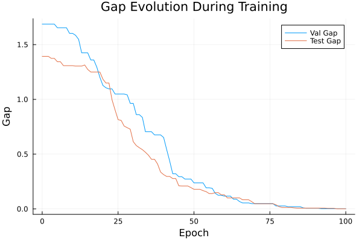
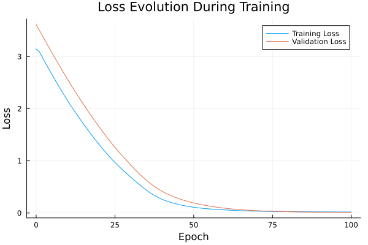

Basic Tutorial: Training with FYL on Argmax Benchmark
This tutorial demonstrates the basic workflow for training a policy using the Perturbed Fenchel-Young Loss algorithm.
Setup
using DecisionFocusedLearningAlgorithms
using DecisionFocusedLearningBenchmarks
using MLUtils: splitobs
using PlotsCreate Benchmark and Data
b = ArgmaxBenchmark()
dataset = generate_dataset(b, 100)
train_data, val_data, test_data = splitobs(dataset; at=(0.3, 0.3, 0.4))(DecisionFocusedLearningBenchmarks.Utils.DataSample{@NamedTuple{}, @NamedTuple{}, Matrix{Float32}, Vector{Float32}, Vector{Float32}}[DataSample(x=Float32[0.261131 1.38757 … 0.568206 -0.57619; 0.982002 0.985659 … -0.00713222 1.14454; … ; 0.73133 -0.296799 … 0.387235 -0.538363; -0.0481581 0.383552 … -0.451464 -0.193199], θ=Float32[0.628331, -2.2163, -1.18028, -1.15793, -1.12385, 1.10681, 1.89742, -1.63258, 0.742647, 0.564998], y=Float32[0.0, 0.0, 0.0, 0.0, 0.0, 0.0, 1.0, 0.0, 0.0, 0.0]), DataSample(x=Float32[-2.29802 1.66644 … -0.619574 -0.726099; -1.0976 0.613011 … -0.9785 -0.501809; … ; 0.47169 0.0528833 … -0.154234 0.23465; -0.710961 -0.486158 … 1.34997 -1.37069], θ=Float32[0.123361, -0.0450232, 0.602175, -0.656543, -1.58347, -0.00451688, 0.777533, -1.96341, -0.650621, 1.08376], y=Float32[0.0, 0.0, 0.0, 0.0, 0.0, 0.0, 0.0, 0.0, 0.0, 1.0]), DataSample(x=Float32[-0.674512 0.132551 … -0.754129 0.807997; 1.68808 0.359734 … -1.39039 0.397312; … ; 1.05173 -0.991761 … 0.119263 -0.00654567; -0.755141 0.145045 … 0.116013 -1.58018], θ=Float32[3.25283, -0.316897, -1.18194, 0.487323, -0.290626, -1.83219, -1.08484, -1.34663, -0.285939, 1.84815], y=Float32[1.0, 0.0, 0.0, 0.0, 0.0, 0.0, 0.0, 0.0, 0.0, 0.0]), DataSample(x=Float32[1.16557 -1.28257 … 0.553436 -0.771835; 0.528604 -0.918083 … -2.66491 -0.812268; … ; -0.59494 1.12851 … 0.0698999 -0.970311; 0.275801 0.709947 … 1.55606 -0.818484], θ=Float32[0.494237, -0.686688, 2.46503, -0.464091, -4.12247, -3.88695, -1.46422, -1.00933, -3.98657, -0.717475], y=Float32[0.0, 0.0, 1.0, 0.0, 0.0, 0.0, 0.0, 0.0, 0.0, 0.0]), DataSample(x=Float32[-0.167928 0.0167169 … 1.33295 1.56461; 0.0531796 1.89848 … -0.161134 -0.272988; … ; 0.471108 -1.00255 … 0.326819 0.325056; -1.27729 -0.305255 … -1.1055 -1.27222], θ=Float32[0.753434, -0.0314466, -0.919697, 2.58591, -1.15711, 1.31058, -0.0735587, 0.589808, 0.357435, 0.357406], y=Float32[0.0, 0.0, 0.0, 1.0, 0.0, 0.0, 0.0, 0.0, 0.0, 0.0]), DataSample(x=Float32[0.0417845 -1.19534 … -1.35975 0.908513; 1.79317 1.13689 … -0.33967 -0.275434; … ; -0.817257 -0.208173 … -1.17508 0.303806; 1.31037 -0.229134 … -1.99352 0.164829], θ=Float32[0.392418, 0.675744, 3.20918, -0.198273, 0.547507, -2.58967, -1.15872, -1.09158, -0.0444655, 0.415238], y=Float32[0.0, 0.0, 1.0, 0.0, 0.0, 0.0, 0.0, 0.0, 0.0, 0.0]), DataSample(x=Float32[1.70528 -0.253514 … -2.19631 -0.262508; 0.543675 -1.11934 … -0.478558 1.70784; … ; -1.19303 0.243537 … 0.880953 0.0390915; -1.67703 -0.289399 … 0.493569 0.490117], θ=Float32[1.03245, -0.681696, -1.40768, -0.110034, 2.42917, 0.538669, 0.199961, -1.29195, -0.184883, 0.362071], y=Float32[0.0, 0.0, 0.0, 0.0, 1.0, 0.0, 0.0, 0.0, 0.0, 0.0]), DataSample(x=Float32[0.331164 -0.366315 … 0.139417 0.701591; 0.839011 0.355446 … 0.809339 -0.901913; … ; 0.244295 0.900248 … 0.380287 1.4592; 0.767304 -1.937 … -0.435972 -0.391099], θ=Float32[-0.436628, 1.28379, 0.0510892, -0.134848, -1.41745, -0.169142, -0.477279, 0.664724, 1.7463, -1.09142], y=Float32[0.0, 0.0, 0.0, 0.0, 0.0, 0.0, 0.0, 0.0, 1.0, 0.0]), DataSample(x=Float32[0.0148008 0.171973 … 1.30847 -0.382517; -0.80829 -0.654609 … 0.304136 -0.30145; … ; 0.0644939 0.621819 … 1.28403 -0.800738; -1.28374 -0.778697 … 0.813941 0.575417], θ=Float32[1.41935, 0.624333, -0.623874, 1.44973, -0.36766, 2.21318, 1.94762, -0.270199, -0.145989, -1.92542], y=Float32[0.0, 0.0, 0.0, 0.0, 0.0, 1.0, 0.0, 0.0, 0.0, 0.0]), DataSample(x=Float32[-0.728801 -0.713395 … 0.0988286 -0.163734; 1.30494 -0.180254 … 0.709791 -0.686971; … ; -0.399757 -0.810361 … -2.55986 -2.2015; 0.496817 -0.577979 … 0.964775 -1.75365], θ=Float32[0.156206, -0.0716317, -0.232336, -1.45749, -2.59894, -2.19724, -0.940994, -0.265827, -1.28346, -0.743791], y=Float32[1.0, 0.0, 0.0, 0.0, 0.0, 0.0, 0.0, 0.0, 0.0, 0.0]) … DataSample(x=Float32[-0.35962 1.55211 … -0.248047 1.13392; -1.02726 -0.993803 … 0.460223 0.342873; … ; 0.00853136 1.62704 … 0.245303 0.574146; 0.593937 -0.580185 … 0.575899 0.145667], θ=Float32[-2.6596, 0.965354, -0.361624, 1.05969, -1.26222, -1.53637, -0.301538, -1.68193, 0.624067, -0.182685], y=Float32[0.0, 0.0, 0.0, 1.0, 0.0, 0.0, 0.0, 0.0, 0.0, 0.0]), DataSample(x=Float32[1.10785 0.628023 … 0.549672 0.13107; 0.476802 1.19099 … 0.14477 -1.49849; … ; 0.287535 0.468482 … 2.02073 0.768277; -0.648067 0.54639 … -1.50094 -1.49388], θ=Float32[-0.128809, -0.121157, -0.574511, 0.185766, -0.803929, -0.151679, 1.13016, -0.577443, 2.82809, -0.295458], y=Float32[0.0, 0.0, 0.0, 0.0, 0.0, 0.0, 0.0, 0.0, 1.0, 0.0]), DataSample(x=Float32[0.673044 -1.5909 … -0.0948806 -1.199; -2.30359 0.749895 … -0.0931506 1.37962; … ; 1.99173 -1.41786 … -1.55605 -0.736588; -0.53096 1.00038 … 0.796007 0.727743], θ=Float32[-0.117325, -0.207756, -1.69498, -1.33356, -0.662042, 0.928029, 0.281004, -0.369504, -2.15726, 1.0086], y=Float32[0.0, 0.0, 0.0, 0.0, 0.0, 0.0, 0.0, 0.0, 0.0, 1.0]), DataSample(x=Float32[1.13404 -0.752008 … -0.658953 -0.969987; -2.5786 -0.0424243 … -1.15139 -2.33429; … ; -0.0218674 -1.04307 … -0.658596 0.080668; -1.58432 -0.772489 … -0.633897 -2.11224], θ=Float32[-1.60345, -0.168194, -1.09548, -0.7235, -0.564532, -2.41519, 0.678833, -0.651969, -0.542755, 1.82545], y=Float32[0.0, 0.0, 0.0, 0.0, 0.0, 0.0, 0.0, 0.0, 0.0, 1.0]), DataSample(x=Float32[0.716883 1.42015 … -0.761571 0.601454; 0.521846 -0.129663 … 1.35682 1.33398; … ; -0.423142 0.538319 … -0.979972 -0.23332; 0.00187852 0.867678 … 0.662849 0.546907], θ=Float32[-0.277495, 0.0811232, -2.77809, 0.182492, 0.0930318, 0.534371, -0.190639, -1.07704, 0.679818, 0.537482], y=Float32[0.0, 0.0, 0.0, 0.0, 0.0, 0.0, 0.0, 0.0, 1.0, 0.0]), DataSample(x=Float32[0.188713 -0.162411 … 1.26971 0.417077; 1.20764 -0.955094 … 1.33909 -0.804944; … ; 0.0807153 -0.37274 … 0.396715 -1.85199; -2.17003 1.61608 … 0.974366 -1.005], θ=Float32[2.23997, -1.73823, -0.8425, 0.0324376, 1.99405, 1.67188, 1.4582, -0.633844, 0.0779973, -0.917197], y=Float32[1.0, 0.0, 0.0, 0.0, 0.0, 0.0, 0.0, 0.0, 0.0, 0.0]), DataSample(x=Float32[1.25531 0.378777 … -0.98787 0.789865; 0.419836 -1.35712 … -0.767683 0.381696; … ; -0.498286 -0.209444 … 0.107558 0.0441392; 2.02052 -0.0864919 … -1.34433 -0.604313], θ=Float32[-1.51681, -2.02746, 0.945699, 0.852917, 4.43416, 1.90649, 2.90765, -0.753302, 0.577255, 1.08413], y=Float32[0.0, 0.0, 0.0, 0.0, 1.0, 0.0, 0.0, 0.0, 0.0, 0.0]), DataSample(x=Float32[-1.11958 -0.847575 … -0.882513 -1.70412; -0.33396 -0.208047 … -3.27056 1.16793; … ; 0.640538 1.26392 … -0.654752 1.11797; 1.12067 -0.485728 … -0.688543 -0.418553], θ=Float32[-1.21325, 2.12174, 1.17232, 0.781732, -1.11312, 0.181886, -1.84288, 0.746259, -2.62714, 1.58682], y=Float32[0.0, 1.0, 0.0, 0.0, 0.0, 0.0, 0.0, 0.0, 0.0, 0.0]), DataSample(x=Float32[1.15578 -0.191593 … -0.697934 -0.980423; 0.717504 0.888362 … 0.212255 0.361363; … ; -1.95875 -0.636844 … -2.58374 -0.414313; -1.04996 0.822642 … 0.771142 0.458439], θ=Float32[0.143691, -1.34058, -2.02362, 0.201078, 0.759839, -0.965826, -0.270539, -0.779581, -2.44839, 0.15155], y=Float32[0.0, 0.0, 0.0, 0.0, 1.0, 0.0, 0.0, 0.0, 0.0, 0.0]), DataSample(x=Float32[0.0811156 1.18437 … -0.832099 -0.00732463; -1.89756 -0.360025 … -0.111422 2.75253; … ; 0.00288842 1.34245 … -0.118721 -1.52347; 1.99389 0.0603584 … 1.40451 -0.469658], θ=Float32[-2.68584, 0.502257, -2.82963, -1.95945, -2.29388, 1.98286, -0.130827, 0.538902, -1.02512, 1.30403], y=Float32[0.0, 0.0, 0.0, 0.0, 0.0, 1.0, 0.0, 0.0, 0.0, 0.0])], DecisionFocusedLearningBenchmarks.Utils.DataSample{@NamedTuple{}, @NamedTuple{}, Matrix{Float32}, Vector{Float32}, Vector{Float32}}[DataSample(x=Float32[0.180096 -1.20519 … 0.381572 -0.809734; -1.79455 0.882508 … 0.855669 -1.00337; … ; 1.38043 1.1788 … -1.11672 1.14423; 0.830291 -1.43387 … 1.97762 -0.179741], θ=Float32[-0.0727018, 2.82664, -0.168221, -1.83131, -0.270248, 0.569911, 0.17817, 0.302883, -1.75533, 0.104599], y=Float32[0.0, 1.0, 0.0, 0.0, 0.0, 0.0, 0.0, 0.0, 0.0, 0.0]), DataSample(x=Float32[0.248011 -0.344421 … 3.16357 -0.103758; 0.505517 1.58062 … -1.55996 0.810422; … ; -0.673229 -1.9288 … -0.123479 0.0604663; -1.01472 -0.923534 … -0.13187 0.180602], θ=Float32[-0.309492, 1.66821, 0.633312, -0.835948, -1.30926, -0.543372, -1.39903, 1.14245, -2.72477, 0.204654], y=Float32[0.0, 1.0, 0.0, 0.0, 0.0, 0.0, 0.0, 0.0, 0.0, 0.0]), DataSample(x=Float32[-0.250181 -0.522649 … -0.861208 -1.23558; -0.967529 -1.09223 … -1.17071 -0.333209; … ; -0.293195 -0.138723 … 1.08409 -1.1226; -0.310176 -1.45008 … 1.20704 1.70751], θ=Float32[-0.869927, 0.953364, -1.97162, 0.557499, -0.907006, 1.08467, 0.439448, -0.00350124, -0.622165, -1.0432], y=Float32[0.0, 0.0, 0.0, 0.0, 0.0, 1.0, 0.0, 0.0, 0.0, 0.0]), DataSample(x=Float32[0.611966 0.15849 … -1.16343 -0.804185; 1.02335 -0.110066 … 0.905272 -0.995245; … ; 1.89418 0.624741 … 0.712447 -1.42905; -0.222038 0.0206992 … 1.82199 0.33187], θ=Float32[0.978134, 0.0681903, 0.328229, 0.599364, -0.888377, -0.388649, -0.320001, -0.213613, 0.696723, -1.30047], y=Float32[1.0, 0.0, 0.0, 0.0, 0.0, 0.0, 0.0, 0.0, 0.0, 0.0]), DataSample(x=Float32[-1.00849 -0.120055 … -0.639081 -0.997735; -0.0285254 1.44207 … -0.363302 0.900608; … ; -0.421761 0.813189 … 0.861852 -0.359559; -0.29054 -0.353264 … -0.338164 2.66172], θ=Float32[-0.769918, 2.20728, 0.212512, -0.20247, -1.97288, 1.88468, 0.819503, -1.48945, 1.10733, -0.919055], y=Float32[0.0, 1.0, 0.0, 0.0, 0.0, 0.0, 0.0, 0.0, 0.0, 0.0]), DataSample(x=Float32[0.870473 0.362579 … 0.916526 -0.368196; 0.138601 0.751214 … 1.21356 0.398366; … ; -1.18439 -0.178159 … -1.84108 0.377026; 1.04474 -0.152702 … -0.382316 -0.812225], θ=Float32[-0.797689, 0.322558, 0.0838841, 0.738447, -1.32009, 1.10391, 0.476082, -1.97394, -0.189564, 0.970829], y=Float32[0.0, 0.0, 0.0, 0.0, 0.0, 1.0, 0.0, 0.0, 0.0, 0.0]), DataSample(x=Float32[-0.170853 0.166499 … -0.990029 -0.529624; -0.28879 1.22828 … 0.0905097 -0.799745; … ; 0.557344 -2.06514 … 0.609235 1.55141; 0.960747 0.520346 … -0.805417 0.00669359], θ=Float32[-1.40374, -1.17545, 0.505811, 0.232973, -0.134515, 0.767252, 0.376817, -0.629468, 0.54039, 0.180137], y=Float32[0.0, 0.0, 0.0, 0.0, 0.0, 1.0, 0.0, 0.0, 0.0, 0.0]), DataSample(x=Float32[2.07434 -0.149922 … -0.0753667 -1.2959; 0.0518263 -0.525051 … -0.357618 -1.88205; … ; 0.621332 0.00134473 … 0.83063 0.0899697; -0.6085 -0.328169 … 0.803193 -0.537273], θ=Float32[-0.709536, -0.0726813, 0.0637462, -1.8087, 1.15717, 1.22255, 1.02554, 0.04787, 0.0707781, -1.54052], y=Float32[0.0, 0.0, 0.0, 0.0, 0.0, 1.0, 0.0, 0.0, 0.0, 0.0]), DataSample(x=Float32[0.322027 -0.763516 … -0.658677 0.360535; -0.581214 1.83057 … 0.223263 -1.15223; … ; -1.34974 2.43211 … 0.667352 -0.635016; -0.09882 0.529805 … 0.338206 -0.735267], θ=Float32[-1.66673, 1.76064, 2.54271, -2.88192, 0.889007, -1.93289, -1.11761, 0.80749, 0.656637, -2.29042], y=Float32[0.0, 0.0, 1.0, 0.0, 0.0, 0.0, 0.0, 0.0, 0.0, 0.0]), DataSample(x=Float32[1.59972 0.129852 … -1.40411 1.25341; 0.548789 -0.697975 … 1.22698 0.550493; … ; 0.662657 -0.0642492 … 0.694373 -1.7483; -0.148041 0.941814 … 0.482101 -0.997671], θ=Float32[0.780794, -1.24752, -2.12173, -0.746655, -0.0367417, 0.456053, 0.793156, -2.34293, 2.14076, -0.747623], y=Float32[0.0, 0.0, 0.0, 0.0, 0.0, 0.0, 0.0, 0.0, 1.0, 0.0]) … DataSample(x=Float32[2.21582 -1.078 … 2.16032 0.605799; -0.178907 0.206799 … -0.995449 -1.076; … ; 1.13426 0.424486 … 1.53498 -0.462931; -1.18895 -1.09032 … 0.580717 -0.829856], θ=Float32[0.391812, 0.822756, 1.16474, 0.132198, 1.37128, -1.33645, 2.11851, 0.717119, 0.246499, -0.399387], y=Float32[0.0, 0.0, 0.0, 0.0, 0.0, 0.0, 1.0, 0.0, 0.0, 0.0]), DataSample(x=Float32[-0.907918 -0.334028 … 0.917001 -0.784817; 1.23353 1.48604 … -1.71365 -1.37888; … ; -0.765251 0.69936 … -0.841434 -1.07775; 0.591272 -0.131718 … -0.720913 0.74333], θ=Float32[0.363972, 1.97197, 0.908073, 1.15074, 1.09067, -0.451363, 0.498557, 0.489141, -2.2821, -1.12136], y=Float32[0.0, 1.0, 0.0, 0.0, 0.0, 0.0, 0.0, 0.0, 0.0, 0.0]), DataSample(x=Float32[0.35628 1.36104 … -0.0253588 -0.695934; -1.20834 -0.339999 … 0.732402 1.20646; … ; 1.03481 1.09689 … 0.312468 0.255012; 0.53969 0.0668757 … -1.47211 -2.09108], θ=Float32[-0.227609, -0.103825, -0.0830479, 2.33624, -1.60146, 1.74543, 0.699476, -0.316931, 1.52804, 3.64539], y=Float32[0.0, 0.0, 0.0, 0.0, 0.0, 0.0, 0.0, 0.0, 0.0, 1.0]), DataSample(x=Float32[-0.38348 -2.85326 … 1.29037 -1.79045; 0.34415 -1.84824 … -1.50205 0.411325; … ; -1.39072 -0.672585 … 0.457437 -0.945728; 0.472818 -0.438382 … -0.922297 0.522848], θ=Float32[-1.06843, -0.00370036, -0.168397, 2.30549, 1.10213, 2.29219, 0.59861, 2.0305, -0.249922, -0.848424], y=Float32[0.0, 0.0, 0.0, 1.0, 0.0, 0.0, 0.0, 0.0, 0.0, 0.0]), DataSample(x=Float32[0.197132 1.92142 … 1.29058 -0.840851; 2.55561 0.159373 … -0.946427 0.948954; … ; -0.451752 -0.0608865 … 0.131318 0.265037; -0.0994728 -0.482831 … 1.15278 -1.10781], θ=Float32[2.45353, -1.56039, 0.158798, -0.510887, -2.02387, -0.743563, -2.13306, -3.5455, -0.813548, 2.26499], y=Float32[1.0, 0.0, 0.0, 0.0, 0.0, 0.0, 0.0, 0.0, 0.0, 0.0]), DataSample(x=Float32[0.708183 1.40865 … -0.957419 -0.114097; 0.534576 -0.84697 … -1.58319 -1.39155; … ; -0.245799 0.11378 … -1.10558 0.436227; 2.08538 -0.420121 … 0.167346 0.231815], θ=Float32[-1.29481, 0.144107, -0.398298, -1.16471, 1.06485, -0.337776, -0.958924, 0.385897, -2.54981, -1.11964], y=Float32[0.0, 0.0, 0.0, 0.0, 1.0, 0.0, 0.0, 0.0, 0.0, 0.0]), DataSample(x=Float32[0.0475393 -0.93741 … 0.694469 -0.384677; -0.692413 1.11824 … -0.347583 0.00663595; … ; -1.3236 2.085 … 0.674399 -0.342781; 1.90585 2.17826 … -2.28858 0.862787], θ=Float32[-3.53895, 1.79103, 0.962493, 2.91438, -0.501051, 0.945038, 1.27386, 0.320463, 2.06144, -0.14831], y=Float32[0.0, 0.0, 0.0, 1.0, 0.0, 0.0, 0.0, 0.0, 0.0, 0.0]), DataSample(x=Float32[0.259757 -0.596416 … -0.41652 -1.56427; -0.730218 0.496294 … 1.54692 -0.161378; … ; -1.28719 0.483183 … 1.54043 0.0390788; 0.259181 0.937604 … 0.134037 -1.56948], θ=Float32[-0.80138, 0.136956, 2.40739, -2.14037, -0.634608, -0.732313, -0.193394, -1.42695, 1.28183, 1.50111], y=Float32[0.0, 0.0, 1.0, 0.0, 0.0, 0.0, 0.0, 0.0, 0.0, 0.0]), DataSample(x=Float32[-0.376809 -1.13304 … -0.186817 0.270773; -0.135178 0.664225 … 0.466819 -1.4987; … ; -0.227118 0.885516 … -0.352107 -1.81024; 0.624216 -1.2072 … -1.64907 0.869988], θ=Float32[-1.58239, 1.28908, 0.394333, -0.619868, -1.23082, -0.285539, -1.38429, 2.45917, 0.861147, -2.98228], y=Float32[0.0, 0.0, 0.0, 0.0, 0.0, 0.0, 0.0, 1.0, 0.0, 0.0]), DataSample(x=Float32[1.41903 -0.495277 … 0.498261 -1.64755; 0.298516 -1.05599 … 1.69701 -0.753602; … ; 0.921202 -1.30898 … -1.79646 0.845171; -0.132575 -1.67617 … 0.325027 -0.642875], θ=Float32[0.919871, -0.255658, -1.87344, 0.937268, 1.99724, -1.33109, -0.158897, 0.726417, 0.702171, -0.248714], y=Float32[0.0, 0.0, 0.0, 0.0, 1.0, 0.0, 0.0, 0.0, 0.0, 0.0])], DecisionFocusedLearningBenchmarks.Utils.DataSample{@NamedTuple{}, @NamedTuple{}, Matrix{Float32}, Vector{Float32}, Vector{Float32}}[DataSample(x=Float32[-0.124551 1.05092 … -0.676503 1.11292; -0.248111 1.0249 … -0.371792 1.38204; … ; 1.29589 -1.1694 … -0.774728 -0.240166; -0.139962 -0.499207 … 0.30187 0.213601], θ=Float32[0.465372, -1.17949, 0.383558, 2.86322, 0.832899, -2.61221, -2.20249, -0.497921, 0.601594, -0.671796], y=Float32[0.0, 0.0, 0.0, 1.0, 0.0, 0.0, 0.0, 0.0, 0.0, 0.0]), DataSample(x=Float32[-0.108995 -0.220677 … 0.474526 0.0914093; -0.286486 0.650658 … -0.110382 1.13183; … ; 0.297799 0.13607 … -1.36219 0.366657; -0.137027 -0.431783 … -0.697078 -0.0400888], θ=Float32[0.353781, 1.50554, 0.455142, -0.187848, 1.59047, 0.366437, 1.30309, 0.306581, -1.0065, 1.64109], y=Float32[0.0, 0.0, 0.0, 0.0, 0.0, 0.0, 0.0, 0.0, 0.0, 1.0]), DataSample(x=Float32[-1.33859 1.78275 … 0.643185 2.02016; 0.513324 0.0754261 … 0.00879422 -1.36013; … ; 0.855152 1.39614 … -0.367935 1.028; 0.0913782 -0.341466 … 0.768396 -0.823428], θ=Float32[0.591047, 1.11039, -1.54596, -1.36393, -1.04133, 2.16346, 2.12804, 0.301394, -0.641962, -0.0302545], y=Float32[0.0, 0.0, 0.0, 0.0, 0.0, 1.0, 0.0, 0.0, 0.0, 0.0]), DataSample(x=Float32[0.43708 -1.81593 … -0.692285 -1.32963; 0.247215 -0.346703 … -1.52356 0.983032; … ; 0.880026 -0.252773 … -0.877498 -0.886673; -0.89042 1.03571 … 0.141546 0.0171464], θ=Float32[0.655177, -0.579404, 1.34291, 0.602501, -1.10392, 0.0659843, -2.00371, -0.566073, -0.450815, 0.22036], y=Float32[0.0, 0.0, 1.0, 0.0, 0.0, 0.0, 0.0, 0.0, 0.0, 0.0]), DataSample(x=Float32[-0.457063 1.91554 … 0.236916 -1.75002; -0.286863 -0.309034 … 0.646222 -0.206573; … ; -0.516594 -1.10782 … -0.456547 1.03799; 0.677696 0.313042 … -1.69272 -0.314447], θ=Float32[-1.01274, -2.01217, -0.312765, -0.662551, -0.339725, -1.27982, 1.21759, -1.16477, 0.336684, 1.18222], y=Float32[0.0, 0.0, 0.0, 0.0, 0.0, 0.0, 1.0, 0.0, 0.0, 0.0]), DataSample(x=Float32[1.67332 -0.185936 … 0.850856 1.44735; 0.684558 1.59898 … -0.658902 0.265536; … ; 0.313213 1.26597 … 0.870192 -0.875366; -2.3931 -1.18261 … -0.392818 0.807601], θ=Float32[2.6214, 1.93657, 0.723804, 0.0888487, 0.532204, -1.16723, 0.778646, 0.813865, 1.41073, -0.741644], y=Float32[1.0, 0.0, 0.0, 0.0, 0.0, 0.0, 0.0, 0.0, 0.0, 0.0]), DataSample(x=Float32[0.809139 0.00527863 … -0.443409 0.977625; 0.308525 -0.150124 … -0.627814 0.606608; … ; 0.028785 -0.169931 … -0.172112 -0.322714; 1.27322 -0.511791 … 0.445394 -1.51067], θ=Float32[-0.246822, -0.0172276, -0.916599, -0.162248, 0.470664, 0.874154, 1.80255, 1.59295, -0.15172, 0.76155], y=Float32[0.0, 0.0, 0.0, 0.0, 0.0, 0.0, 1.0, 0.0, 0.0, 0.0]), DataSample(x=Float32[-0.979414 1.02368 … 0.599377 0.262599; 0.288246 -0.108962 … 0.242431 -1.04925; … ; 0.114678 -1.45504 … -0.032809 -0.157364; 0.208177 0.822964 … -0.601299 -0.352474], θ=Float32[0.709153, -2.75158, 0.431762, -1.92298, 1.1719, 0.255295, 1.02655, 2.3799, 0.230059, -0.744493], y=Float32[0.0, 0.0, 0.0, 0.0, 0.0, 0.0, 0.0, 1.0, 0.0, 0.0]), DataSample(x=Float32[-1.13134 0.71038 … 1.44676 0.0021878; -1.14757 1.31489 … -0.232864 -0.142911; … ; -0.874231 0.0615707 … 0.0742243 -0.905043; 0.256383 -0.753875 … -0.298827 0.51404], θ=Float32[-1.51341, 1.03883, 0.785042, -1.62171, -1.23753, -0.564188, -1.99674, 2.33085, 0.309651, -0.809815], y=Float32[0.0, 0.0, 0.0, 0.0, 0.0, 0.0, 0.0, 1.0, 0.0, 0.0]), DataSample(x=Float32[-0.227502 0.706286 … 0.562924 0.887577; 0.638973 -1.94513 … 0.541526 -0.959728; … ; -0.71279 -3.57345 … 0.552628 1.15111; 1.67705 -0.308462 … -0.542401 -0.70386], θ=Float32[-1.20247, -3.13264, 1.92838, 1.00846, -0.570257, 1.652, 0.186145, -2.77297, 1.16423, -0.5679], y=Float32[0.0, 0.0, 1.0, 0.0, 0.0, 0.0, 0.0, 0.0, 0.0, 0.0]) … DataSample(x=Float32[-0.716224 0.0203838 … -0.391784 -0.17785; -0.248162 -0.233038 … -0.435599 0.50183; … ; 0.487495 0.14189 … 0.683427 0.102939; -0.457977 0.484133 … 0.708641 0.619977], θ=Float32[1.1754, 0.0931764, 0.646226, 1.69089, -1.37557, 0.768189, -0.230023, -1.24786, -0.655271, 0.447254], y=Float32[0.0, 0.0, 0.0, 1.0, 0.0, 0.0, 0.0, 0.0, 0.0, 0.0]), DataSample(x=Float32[1.24741 -1.42385 … -1.08033 -0.620939; -0.524751 0.713548 … 0.887608 -1.53885; … ; 0.269215 1.91211 … -0.464172 1.30781; 0.418938 -0.512377 … 0.151919 0.744454], θ=Float32[-1.25968, 2.02395, -1.96058, -1.6142, -0.483287, -1.34134, -0.247204, 0.155574, 0.256123, 0.0930461], y=Float32[0.0, 1.0, 0.0, 0.0, 0.0, 0.0, 0.0, 0.0, 0.0, 0.0]), DataSample(x=Float32[0.56759 -1.9572 … -1.01876 1.19971; -0.164463 -1.47685 … -0.358101 -0.33089; … ; -0.155387 -0.699734 … 1.07199 1.20353; 0.941598 0.634692 … -0.337043 0.444064], θ=Float32[-1.58042, -1.80161, -0.222758, 0.66998, 1.50457, 0.0107083, 0.547676, 0.53419, 0.361214, 0.923196], y=Float32[0.0, 0.0, 0.0, 0.0, 1.0, 0.0, 0.0, 0.0, 0.0, 0.0]), DataSample(x=Float32[1.1292 0.874205 … 1.52871 1.01385; -0.909311 1.10324 … -0.647484 -0.136173; … ; 0.0357891 0.608056 … -1.02154 0.250092; -1.8927 1.1381 … -0.268349 -1.61577], θ=Float32[0.31786, 0.506045, -1.59495, 0.418197, -0.603881, -0.43781, -0.495452, 1.50795, -1.63383, 0.861731], y=Float32[0.0, 0.0, 0.0, 0.0, 0.0, 0.0, 0.0, 1.0, 0.0, 0.0]), DataSample(x=Float32[1.70248 -2.00956 … 0.732156 -2.21513; 1.43484 -0.891122 … 0.0637252 1.64436; … ; -0.850775 2.17394 … -0.705924 0.123596; -1.18133 -3.19452 … 0.472469 -0.0053975], θ=Float32[-0.370236, 4.03104, -1.39537, -3.00386, 2.02691, -2.50329, 1.13373, 0.299159, -1.02806, 1.00002], y=Float32[0.0, 1.0, 0.0, 0.0, 0.0, 0.0, 0.0, 0.0, 0.0, 0.0]), DataSample(x=Float32[-1.2825 0.552442 … -1.13727 0.492226; 0.721839 0.721161 … -0.230553 -1.06501; … ; -0.309781 1.24742 … -0.193531 -0.177313; -1.13951 0.899682 … -0.9969 -0.251666], θ=Float32[1.04554, 1.46939, -2.04317, -0.35652, 0.364038, -0.923895, 1.33036, 0.928285, 1.21794, -1.10371], y=Float32[0.0, 1.0, 0.0, 0.0, 0.0, 0.0, 0.0, 0.0, 0.0, 0.0]), DataSample(x=Float32[-0.159875 -0.328483 … 0.744532 0.142837; 0.388976 0.84697 … 1.16246 0.74169; … ; -0.532965 0.868182 … -0.790262 0.411683; -1.6278 0.33828 … -1.15802 -1.84494], θ=Float32[0.690662, 1.14882, -0.317384, 0.819924, -1.8526, 0.909811, -2.30749, -0.427519, 0.899345, 2.62289], y=Float32[0.0, 0.0, 0.0, 0.0, 0.0, 0.0, 0.0, 0.0, 0.0, 1.0]), DataSample(x=Float32[0.200027 -0.947252 … 0.374188 0.731512; -0.290158 -0.817182 … 0.260269 -1.80846; … ; -0.495026 -0.249961 … 0.817883 0.602908; -0.0708488 -1.43385 … 1.11247 -1.03112], θ=Float32[0.445437, 0.125554, -0.930614, 0.418103, -1.66746, 1.55342, 1.82692, -0.793018, 0.37973, 0.152034], y=Float32[0.0, 0.0, 0.0, 0.0, 0.0, 0.0, 1.0, 0.0, 0.0, 0.0]), DataSample(x=Float32[-0.436002 -0.500705 … 0.577984 0.982591; 1.35734 0.358812 … 0.0347812 -1.19414; … ; -1.02769 -0.260544 … 0.413432 -0.155956; -0.907976 -0.960472 … 0.884537 0.885485], θ=Float32[0.727065, 0.157069, 2.47832, -1.07466, 0.51913, 1.32485, 0.840683, 0.401744, -0.881525, -2.23362], y=Float32[0.0, 0.0, 1.0, 0.0, 0.0, 0.0, 0.0, 0.0, 0.0, 0.0]), DataSample(x=Float32[-0.200802 -0.367416 … 1.20044 2.61887; -1.26918 -0.246682 … -1.71633 -1.14511; … ; 2.16865 1.34632 … -1.62378 -0.778702; 0.118656 -0.281792 … -0.306042 -0.17808], θ=Float32[1.01678, 0.385873, 0.133334, 0.848347, 1.15125, -0.828979, 0.951691, -0.0299429, -1.69639, -2.31576], y=Float32[0.0, 0.0, 0.0, 0.0, 1.0, 0.0, 0.0, 0.0, 0.0, 0.0])], DecisionFocusedLearningBenchmarks.Utils.DataSample{@NamedTuple{}, @NamedTuple{}, Matrix{Float32}, Vector{Float32}, Vector{Float32}}[])Create Policy
model = generate_statistical_model(b; seed=0)
maximizer = generate_maximizer(b)
policy = DFLPolicy(model, maximizer)DFLPolicy{Flux.Chain{Tuple{Flux.Dense{typeof(identity), Matrix{Float32}, Bool}, typeof(vec)}}, typeof(DecisionFocusedLearningBenchmarks.Argmax.one_hot_argmax)}(Chain(Dense(5 => 1; bias=false), vec), DecisionFocusedLearningBenchmarks.Argmax.one_hot_argmax)Configure Algorithm
algorithm = PerturbedFenchelYoungLossImitation(;
nb_samples=10, ε=0.1, threaded=true, seed=0
)PerturbedFenchelYoungLossImitation{Optimisers.Adam{Float64, Tuple{Float64, Float64}, Float64}, Int64}(10, 0.1, true, Optimisers.Adam(eta=0.001, beta=(0.9, 0.999), epsilon=1.0e-8), 0, false)Define Metrics to track during training
validation_loss_metric = FYLLossMetric(val_data, :validation_loss)
val_gap_metric = FunctionMetric(:val_gap, val_data) do ctx, data
return compute_gap(b, data, ctx.policy.statistical_model, ctx.policy.maximizer)
end
test_gap_metric = FunctionMetric(:test_gap, test_data) do ctx, data
return compute_gap(b, data, ctx.policy.statistical_model, ctx.policy.maximizer)
end
metrics = (validation_loss_metric, val_gap_metric, test_gap_metric)(FYLLossMetric{SubArray{DecisionFocusedLearningBenchmarks.Utils.DataSample{@NamedTuple{}, @NamedTuple{}, Matrix{Float32}, Vector{Float32}, Vector{Float32}}, 1, Vector{DecisionFocusedLearningBenchmarks.Utils.DataSample{@NamedTuple{}, @NamedTuple{}, Matrix{Float32}, Vector{Float32}, Vector{Float32}}}, Tuple{UnitRange{Int64}}, true}}(DecisionFocusedLearningBenchmarks.Utils.DataSample{@NamedTuple{}, @NamedTuple{}, Matrix{Float32}, Vector{Float32}, Vector{Float32}}[DataSample(x=Float32[0.180096 -1.20519 … 0.381572 -0.809734; -1.79455 0.882508 … 0.855669 -1.00337; … ; 1.38043 1.1788 … -1.11672 1.14423; 0.830291 -1.43387 … 1.97762 -0.179741], θ=Float32[-0.0727018, 2.82664, -0.168221, -1.83131, -0.270248, 0.569911, 0.17817, 0.302883, -1.75533, 0.104599], y=Float32[0.0, 1.0, 0.0, 0.0, 0.0, 0.0, 0.0, 0.0, 0.0, 0.0]), DataSample(x=Float32[0.248011 -0.344421 … 3.16357 -0.103758; 0.505517 1.58062 … -1.55996 0.810422; … ; -0.673229 -1.9288 … -0.123479 0.0604663; -1.01472 -0.923534 … -0.13187 0.180602], θ=Float32[-0.309492, 1.66821, 0.633312, -0.835948, -1.30926, -0.543372, -1.39903, 1.14245, -2.72477, 0.204654], y=Float32[0.0, 1.0, 0.0, 0.0, 0.0, 0.0, 0.0, 0.0, 0.0, 0.0]), DataSample(x=Float32[-0.250181 -0.522649 … -0.861208 -1.23558; -0.967529 -1.09223 … -1.17071 -0.333209; … ; -0.293195 -0.138723 … 1.08409 -1.1226; -0.310176 -1.45008 … 1.20704 1.70751], θ=Float32[-0.869927, 0.953364, -1.97162, 0.557499, -0.907006, 1.08467, 0.439448, -0.00350124, -0.622165, -1.0432], y=Float32[0.0, 0.0, 0.0, 0.0, 0.0, 1.0, 0.0, 0.0, 0.0, 0.0]), DataSample(x=Float32[0.611966 0.15849 … -1.16343 -0.804185; 1.02335 -0.110066 … 0.905272 -0.995245; … ; 1.89418 0.624741 … 0.712447 -1.42905; -0.222038 0.0206992 … 1.82199 0.33187], θ=Float32[0.978134, 0.0681903, 0.328229, 0.599364, -0.888377, -0.388649, -0.320001, -0.213613, 0.696723, -1.30047], y=Float32[1.0, 0.0, 0.0, 0.0, 0.0, 0.0, 0.0, 0.0, 0.0, 0.0]), DataSample(x=Float32[-1.00849 -0.120055 … -0.639081 -0.997735; -0.0285254 1.44207 … -0.363302 0.900608; … ; -0.421761 0.813189 … 0.861852 -0.359559; -0.29054 -0.353264 … -0.338164 2.66172], θ=Float32[-0.769918, 2.20728, 0.212512, -0.20247, -1.97288, 1.88468, 0.819503, -1.48945, 1.10733, -0.919055], y=Float32[0.0, 1.0, 0.0, 0.0, 0.0, 0.0, 0.0, 0.0, 0.0, 0.0]), DataSample(x=Float32[0.870473 0.362579 … 0.916526 -0.368196; 0.138601 0.751214 … 1.21356 0.398366; … ; -1.18439 -0.178159 … -1.84108 0.377026; 1.04474 -0.152702 … -0.382316 -0.812225], θ=Float32[-0.797689, 0.322558, 0.0838841, 0.738447, -1.32009, 1.10391, 0.476082, -1.97394, -0.189564, 0.970829], y=Float32[0.0, 0.0, 0.0, 0.0, 0.0, 1.0, 0.0, 0.0, 0.0, 0.0]), DataSample(x=Float32[-0.170853 0.166499 … -0.990029 -0.529624; -0.28879 1.22828 … 0.0905097 -0.799745; … ; 0.557344 -2.06514 … 0.609235 1.55141; 0.960747 0.520346 … -0.805417 0.00669359], θ=Float32[-1.40374, -1.17545, 0.505811, 0.232973, -0.134515, 0.767252, 0.376817, -0.629468, 0.54039, 0.180137], y=Float32[0.0, 0.0, 0.0, 0.0, 0.0, 1.0, 0.0, 0.0, 0.0, 0.0]), DataSample(x=Float32[2.07434 -0.149922 … -0.0753667 -1.2959; 0.0518263 -0.525051 … -0.357618 -1.88205; … ; 0.621332 0.00134473 … 0.83063 0.0899697; -0.6085 -0.328169 … 0.803193 -0.537273], θ=Float32[-0.709536, -0.0726813, 0.0637462, -1.8087, 1.15717, 1.22255, 1.02554, 0.04787, 0.0707781, -1.54052], y=Float32[0.0, 0.0, 0.0, 0.0, 0.0, 1.0, 0.0, 0.0, 0.0, 0.0]), DataSample(x=Float32[0.322027 -0.763516 … -0.658677 0.360535; -0.581214 1.83057 … 0.223263 -1.15223; … ; -1.34974 2.43211 … 0.667352 -0.635016; -0.09882 0.529805 … 0.338206 -0.735267], θ=Float32[-1.66673, 1.76064, 2.54271, -2.88192, 0.889007, -1.93289, -1.11761, 0.80749, 0.656637, -2.29042], y=Float32[0.0, 0.0, 1.0, 0.0, 0.0, 0.0, 0.0, 0.0, 0.0, 0.0]), DataSample(x=Float32[1.59972 0.129852 … -1.40411 1.25341; 0.548789 -0.697975 … 1.22698 0.550493; … ; 0.662657 -0.0642492 … 0.694373 -1.7483; -0.148041 0.941814 … 0.482101 -0.997671], θ=Float32[0.780794, -1.24752, -2.12173, -0.746655, -0.0367417, 0.456053, 0.793156, -2.34293, 2.14076, -0.747623], y=Float32[0.0, 0.0, 0.0, 0.0, 0.0, 0.0, 0.0, 0.0, 1.0, 0.0]) … DataSample(x=Float32[2.21582 -1.078 … 2.16032 0.605799; -0.178907 0.206799 … -0.995449 -1.076; … ; 1.13426 0.424486 … 1.53498 -0.462931; -1.18895 -1.09032 … 0.580717 -0.829856], θ=Float32[0.391812, 0.822756, 1.16474, 0.132198, 1.37128, -1.33645, 2.11851, 0.717119, 0.246499, -0.399387], y=Float32[0.0, 0.0, 0.0, 0.0, 0.0, 0.0, 1.0, 0.0, 0.0, 0.0]), DataSample(x=Float32[-0.907918 -0.334028 … 0.917001 -0.784817; 1.23353 1.48604 … -1.71365 -1.37888; … ; -0.765251 0.69936 … -0.841434 -1.07775; 0.591272 -0.131718 … -0.720913 0.74333], θ=Float32[0.363972, 1.97197, 0.908073, 1.15074, 1.09067, -0.451363, 0.498557, 0.489141, -2.2821, -1.12136], y=Float32[0.0, 1.0, 0.0, 0.0, 0.0, 0.0, 0.0, 0.0, 0.0, 0.0]), DataSample(x=Float32[0.35628 1.36104 … -0.0253588 -0.695934; -1.20834 -0.339999 … 0.732402 1.20646; … ; 1.03481 1.09689 … 0.312468 0.255012; 0.53969 0.0668757 … -1.47211 -2.09108], θ=Float32[-0.227609, -0.103825, -0.0830479, 2.33624, -1.60146, 1.74543, 0.699476, -0.316931, 1.52804, 3.64539], y=Float32[0.0, 0.0, 0.0, 0.0, 0.0, 0.0, 0.0, 0.0, 0.0, 1.0]), DataSample(x=Float32[-0.38348 -2.85326 … 1.29037 -1.79045; 0.34415 -1.84824 … -1.50205 0.411325; … ; -1.39072 -0.672585 … 0.457437 -0.945728; 0.472818 -0.438382 … -0.922297 0.522848], θ=Float32[-1.06843, -0.00370036, -0.168397, 2.30549, 1.10213, 2.29219, 0.59861, 2.0305, -0.249922, -0.848424], y=Float32[0.0, 0.0, 0.0, 1.0, 0.0, 0.0, 0.0, 0.0, 0.0, 0.0]), DataSample(x=Float32[0.197132 1.92142 … 1.29058 -0.840851; 2.55561 0.159373 … -0.946427 0.948954; … ; -0.451752 -0.0608865 … 0.131318 0.265037; -0.0994728 -0.482831 … 1.15278 -1.10781], θ=Float32[2.45353, -1.56039, 0.158798, -0.510887, -2.02387, -0.743563, -2.13306, -3.5455, -0.813548, 2.26499], y=Float32[1.0, 0.0, 0.0, 0.0, 0.0, 0.0, 0.0, 0.0, 0.0, 0.0]), DataSample(x=Float32[0.708183 1.40865 … -0.957419 -0.114097; 0.534576 -0.84697 … -1.58319 -1.39155; … ; -0.245799 0.11378 … -1.10558 0.436227; 2.08538 -0.420121 … 0.167346 0.231815], θ=Float32[-1.29481, 0.144107, -0.398298, -1.16471, 1.06485, -0.337776, -0.958924, 0.385897, -2.54981, -1.11964], y=Float32[0.0, 0.0, 0.0, 0.0, 1.0, 0.0, 0.0, 0.0, 0.0, 0.0]), DataSample(x=Float32[0.0475393 -0.93741 … 0.694469 -0.384677; -0.692413 1.11824 … -0.347583 0.00663595; … ; -1.3236 2.085 … 0.674399 -0.342781; 1.90585 2.17826 … -2.28858 0.862787], θ=Float32[-3.53895, 1.79103, 0.962493, 2.91438, -0.501051, 0.945038, 1.27386, 0.320463, 2.06144, -0.14831], y=Float32[0.0, 0.0, 0.0, 1.0, 0.0, 0.0, 0.0, 0.0, 0.0, 0.0]), DataSample(x=Float32[0.259757 -0.596416 … -0.41652 -1.56427; -0.730218 0.496294 … 1.54692 -0.161378; … ; -1.28719 0.483183 … 1.54043 0.0390788; 0.259181 0.937604 … 0.134037 -1.56948], θ=Float32[-0.80138, 0.136956, 2.40739, -2.14037, -0.634608, -0.732313, -0.193394, -1.42695, 1.28183, 1.50111], y=Float32[0.0, 0.0, 1.0, 0.0, 0.0, 0.0, 0.0, 0.0, 0.0, 0.0]), DataSample(x=Float32[-0.376809 -1.13304 … -0.186817 0.270773; -0.135178 0.664225 … 0.466819 -1.4987; … ; -0.227118 0.885516 … -0.352107 -1.81024; 0.624216 -1.2072 … -1.64907 0.869988], θ=Float32[-1.58239, 1.28908, 0.394333, -0.619868, -1.23082, -0.285539, -1.38429, 2.45917, 0.861147, -2.98228], y=Float32[0.0, 0.0, 0.0, 0.0, 0.0, 0.0, 0.0, 1.0, 0.0, 0.0]), DataSample(x=Float32[1.41903 -0.495277 … 0.498261 -1.64755; 0.298516 -1.05599 … 1.69701 -0.753602; … ; 0.921202 -1.30898 … -1.79646 0.845171; -0.132575 -1.67617 … 0.325027 -0.642875], θ=Float32[0.919871, -0.255658, -1.87344, 0.937268, 1.99724, -1.33109, -0.158897, 0.726417, 0.702171, -0.248714], y=Float32[0.0, 0.0, 0.0, 0.0, 1.0, 0.0, 0.0, 0.0, 0.0, 0.0])], LossAccumulator(:validation_loss, 0.0, 0)), FunctionMetric{Main.var"#2#3", SubArray{DecisionFocusedLearningBenchmarks.Utils.DataSample{@NamedTuple{}, @NamedTuple{}, Matrix{Float32}, Vector{Float32}, Vector{Float32}}, 1, Vector{DecisionFocusedLearningBenchmarks.Utils.DataSample{@NamedTuple{}, @NamedTuple{}, Matrix{Float32}, Vector{Float32}, Vector{Float32}}}, Tuple{UnitRange{Int64}}, true}}(Main.var"#2#3"(), :val_gap, DecisionFocusedLearningBenchmarks.Utils.DataSample{@NamedTuple{}, @NamedTuple{}, Matrix{Float32}, Vector{Float32}, Vector{Float32}}[DataSample(x=Float32[0.180096 -1.20519 … 0.381572 -0.809734; -1.79455 0.882508 … 0.855669 -1.00337; … ; 1.38043 1.1788 … -1.11672 1.14423; 0.830291 -1.43387 … 1.97762 -0.179741], θ=Float32[-0.0727018, 2.82664, -0.168221, -1.83131, -0.270248, 0.569911, 0.17817, 0.302883, -1.75533, 0.104599], y=Float32[0.0, 1.0, 0.0, 0.0, 0.0, 0.0, 0.0, 0.0, 0.0, 0.0]), DataSample(x=Float32[0.248011 -0.344421 … 3.16357 -0.103758; 0.505517 1.58062 … -1.55996 0.810422; … ; -0.673229 -1.9288 … -0.123479 0.0604663; -1.01472 -0.923534 … -0.13187 0.180602], θ=Float32[-0.309492, 1.66821, 0.633312, -0.835948, -1.30926, -0.543372, -1.39903, 1.14245, -2.72477, 0.204654], y=Float32[0.0, 1.0, 0.0, 0.0, 0.0, 0.0, 0.0, 0.0, 0.0, 0.0]), DataSample(x=Float32[-0.250181 -0.522649 … -0.861208 -1.23558; -0.967529 -1.09223 … -1.17071 -0.333209; … ; -0.293195 -0.138723 … 1.08409 -1.1226; -0.310176 -1.45008 … 1.20704 1.70751], θ=Float32[-0.869927, 0.953364, -1.97162, 0.557499, -0.907006, 1.08467, 0.439448, -0.00350124, -0.622165, -1.0432], y=Float32[0.0, 0.0, 0.0, 0.0, 0.0, 1.0, 0.0, 0.0, 0.0, 0.0]), DataSample(x=Float32[0.611966 0.15849 … -1.16343 -0.804185; 1.02335 -0.110066 … 0.905272 -0.995245; … ; 1.89418 0.624741 … 0.712447 -1.42905; -0.222038 0.0206992 … 1.82199 0.33187], θ=Float32[0.978134, 0.0681903, 0.328229, 0.599364, -0.888377, -0.388649, -0.320001, -0.213613, 0.696723, -1.30047], y=Float32[1.0, 0.0, 0.0, 0.0, 0.0, 0.0, 0.0, 0.0, 0.0, 0.0]), DataSample(x=Float32[-1.00849 -0.120055 … -0.639081 -0.997735; -0.0285254 1.44207 … -0.363302 0.900608; … ; -0.421761 0.813189 … 0.861852 -0.359559; -0.29054 -0.353264 … -0.338164 2.66172], θ=Float32[-0.769918, 2.20728, 0.212512, -0.20247, -1.97288, 1.88468, 0.819503, -1.48945, 1.10733, -0.919055], y=Float32[0.0, 1.0, 0.0, 0.0, 0.0, 0.0, 0.0, 0.0, 0.0, 0.0]), DataSample(x=Float32[0.870473 0.362579 … 0.916526 -0.368196; 0.138601 0.751214 … 1.21356 0.398366; … ; -1.18439 -0.178159 … -1.84108 0.377026; 1.04474 -0.152702 … -0.382316 -0.812225], θ=Float32[-0.797689, 0.322558, 0.0838841, 0.738447, -1.32009, 1.10391, 0.476082, -1.97394, -0.189564, 0.970829], y=Float32[0.0, 0.0, 0.0, 0.0, 0.0, 1.0, 0.0, 0.0, 0.0, 0.0]), DataSample(x=Float32[-0.170853 0.166499 … -0.990029 -0.529624; -0.28879 1.22828 … 0.0905097 -0.799745; … ; 0.557344 -2.06514 … 0.609235 1.55141; 0.960747 0.520346 … -0.805417 0.00669359], θ=Float32[-1.40374, -1.17545, 0.505811, 0.232973, -0.134515, 0.767252, 0.376817, -0.629468, 0.54039, 0.180137], y=Float32[0.0, 0.0, 0.0, 0.0, 0.0, 1.0, 0.0, 0.0, 0.0, 0.0]), DataSample(x=Float32[2.07434 -0.149922 … -0.0753667 -1.2959; 0.0518263 -0.525051 … -0.357618 -1.88205; … ; 0.621332 0.00134473 … 0.83063 0.0899697; -0.6085 -0.328169 … 0.803193 -0.537273], θ=Float32[-0.709536, -0.0726813, 0.0637462, -1.8087, 1.15717, 1.22255, 1.02554, 0.04787, 0.0707781, -1.54052], y=Float32[0.0, 0.0, 0.0, 0.0, 0.0, 1.0, 0.0, 0.0, 0.0, 0.0]), DataSample(x=Float32[0.322027 -0.763516 … -0.658677 0.360535; -0.581214 1.83057 … 0.223263 -1.15223; … ; -1.34974 2.43211 … 0.667352 -0.635016; -0.09882 0.529805 … 0.338206 -0.735267], θ=Float32[-1.66673, 1.76064, 2.54271, -2.88192, 0.889007, -1.93289, -1.11761, 0.80749, 0.656637, -2.29042], y=Float32[0.0, 0.0, 1.0, 0.0, 0.0, 0.0, 0.0, 0.0, 0.0, 0.0]), DataSample(x=Float32[1.59972 0.129852 … -1.40411 1.25341; 0.548789 -0.697975 … 1.22698 0.550493; … ; 0.662657 -0.0642492 … 0.694373 -1.7483; -0.148041 0.941814 … 0.482101 -0.997671], θ=Float32[0.780794, -1.24752, -2.12173, -0.746655, -0.0367417, 0.456053, 0.793156, -2.34293, 2.14076, -0.747623], y=Float32[0.0, 0.0, 0.0, 0.0, 0.0, 0.0, 0.0, 0.0, 1.0, 0.0]) … DataSample(x=Float32[2.21582 -1.078 … 2.16032 0.605799; -0.178907 0.206799 … -0.995449 -1.076; … ; 1.13426 0.424486 … 1.53498 -0.462931; -1.18895 -1.09032 … 0.580717 -0.829856], θ=Float32[0.391812, 0.822756, 1.16474, 0.132198, 1.37128, -1.33645, 2.11851, 0.717119, 0.246499, -0.399387], y=Float32[0.0, 0.0, 0.0, 0.0, 0.0, 0.0, 1.0, 0.0, 0.0, 0.0]), DataSample(x=Float32[-0.907918 -0.334028 … 0.917001 -0.784817; 1.23353 1.48604 … -1.71365 -1.37888; … ; -0.765251 0.69936 … -0.841434 -1.07775; 0.591272 -0.131718 … -0.720913 0.74333], θ=Float32[0.363972, 1.97197, 0.908073, 1.15074, 1.09067, -0.451363, 0.498557, 0.489141, -2.2821, -1.12136], y=Float32[0.0, 1.0, 0.0, 0.0, 0.0, 0.0, 0.0, 0.0, 0.0, 0.0]), DataSample(x=Float32[0.35628 1.36104 … -0.0253588 -0.695934; -1.20834 -0.339999 … 0.732402 1.20646; … ; 1.03481 1.09689 … 0.312468 0.255012; 0.53969 0.0668757 … -1.47211 -2.09108], θ=Float32[-0.227609, -0.103825, -0.0830479, 2.33624, -1.60146, 1.74543, 0.699476, -0.316931, 1.52804, 3.64539], y=Float32[0.0, 0.0, 0.0, 0.0, 0.0, 0.0, 0.0, 0.0, 0.0, 1.0]), DataSample(x=Float32[-0.38348 -2.85326 … 1.29037 -1.79045; 0.34415 -1.84824 … -1.50205 0.411325; … ; -1.39072 -0.672585 … 0.457437 -0.945728; 0.472818 -0.438382 … -0.922297 0.522848], θ=Float32[-1.06843, -0.00370036, -0.168397, 2.30549, 1.10213, 2.29219, 0.59861, 2.0305, -0.249922, -0.848424], y=Float32[0.0, 0.0, 0.0, 1.0, 0.0, 0.0, 0.0, 0.0, 0.0, 0.0]), DataSample(x=Float32[0.197132 1.92142 … 1.29058 -0.840851; 2.55561 0.159373 … -0.946427 0.948954; … ; -0.451752 -0.0608865 … 0.131318 0.265037; -0.0994728 -0.482831 … 1.15278 -1.10781], θ=Float32[2.45353, -1.56039, 0.158798, -0.510887, -2.02387, -0.743563, -2.13306, -3.5455, -0.813548, 2.26499], y=Float32[1.0, 0.0, 0.0, 0.0, 0.0, 0.0, 0.0, 0.0, 0.0, 0.0]), DataSample(x=Float32[0.708183 1.40865 … -0.957419 -0.114097; 0.534576 -0.84697 … -1.58319 -1.39155; … ; -0.245799 0.11378 … -1.10558 0.436227; 2.08538 -0.420121 … 0.167346 0.231815], θ=Float32[-1.29481, 0.144107, -0.398298, -1.16471, 1.06485, -0.337776, -0.958924, 0.385897, -2.54981, -1.11964], y=Float32[0.0, 0.0, 0.0, 0.0, 1.0, 0.0, 0.0, 0.0, 0.0, 0.0]), DataSample(x=Float32[0.0475393 -0.93741 … 0.694469 -0.384677; -0.692413 1.11824 … -0.347583 0.00663595; … ; -1.3236 2.085 … 0.674399 -0.342781; 1.90585 2.17826 … -2.28858 0.862787], θ=Float32[-3.53895, 1.79103, 0.962493, 2.91438, -0.501051, 0.945038, 1.27386, 0.320463, 2.06144, -0.14831], y=Float32[0.0, 0.0, 0.0, 1.0, 0.0, 0.0, 0.0, 0.0, 0.0, 0.0]), DataSample(x=Float32[0.259757 -0.596416 … -0.41652 -1.56427; -0.730218 0.496294 … 1.54692 -0.161378; … ; -1.28719 0.483183 … 1.54043 0.0390788; 0.259181 0.937604 … 0.134037 -1.56948], θ=Float32[-0.80138, 0.136956, 2.40739, -2.14037, -0.634608, -0.732313, -0.193394, -1.42695, 1.28183, 1.50111], y=Float32[0.0, 0.0, 1.0, 0.0, 0.0, 0.0, 0.0, 0.0, 0.0, 0.0]), DataSample(x=Float32[-0.376809 -1.13304 … -0.186817 0.270773; -0.135178 0.664225 … 0.466819 -1.4987; … ; -0.227118 0.885516 … -0.352107 -1.81024; 0.624216 -1.2072 … -1.64907 0.869988], θ=Float32[-1.58239, 1.28908, 0.394333, -0.619868, -1.23082, -0.285539, -1.38429, 2.45917, 0.861147, -2.98228], y=Float32[0.0, 0.0, 0.0, 0.0, 0.0, 0.0, 0.0, 1.0, 0.0, 0.0]), DataSample(x=Float32[1.41903 -0.495277 … 0.498261 -1.64755; 0.298516 -1.05599 … 1.69701 -0.753602; … ; 0.921202 -1.30898 … -1.79646 0.845171; -0.132575 -1.67617 … 0.325027 -0.642875], θ=Float32[0.919871, -0.255658, -1.87344, 0.937268, 1.99724, -1.33109, -0.158897, 0.726417, 0.702171, -0.248714], y=Float32[0.0, 0.0, 0.0, 0.0, 1.0, 0.0, 0.0, 0.0, 0.0, 0.0])]), FunctionMetric{Main.var"#5#6", SubArray{DecisionFocusedLearningBenchmarks.Utils.DataSample{@NamedTuple{}, @NamedTuple{}, Matrix{Float32}, Vector{Float32}, Vector{Float32}}, 1, Vector{DecisionFocusedLearningBenchmarks.Utils.DataSample{@NamedTuple{}, @NamedTuple{}, Matrix{Float32}, Vector{Float32}, Vector{Float32}}}, Tuple{UnitRange{Int64}}, true}}(Main.var"#5#6"(), :test_gap, DecisionFocusedLearningBenchmarks.Utils.DataSample{@NamedTuple{}, @NamedTuple{}, Matrix{Float32}, Vector{Float32}, Vector{Float32}}[DataSample(x=Float32[-0.124551 1.05092 … -0.676503 1.11292; -0.248111 1.0249 … -0.371792 1.38204; … ; 1.29589 -1.1694 … -0.774728 -0.240166; -0.139962 -0.499207 … 0.30187 0.213601], θ=Float32[0.465372, -1.17949, 0.383558, 2.86322, 0.832899, -2.61221, -2.20249, -0.497921, 0.601594, -0.671796], y=Float32[0.0, 0.0, 0.0, 1.0, 0.0, 0.0, 0.0, 0.0, 0.0, 0.0]), DataSample(x=Float32[-0.108995 -0.220677 … 0.474526 0.0914093; -0.286486 0.650658 … -0.110382 1.13183; … ; 0.297799 0.13607 … -1.36219 0.366657; -0.137027 -0.431783 … -0.697078 -0.0400888], θ=Float32[0.353781, 1.50554, 0.455142, -0.187848, 1.59047, 0.366437, 1.30309, 0.306581, -1.0065, 1.64109], y=Float32[0.0, 0.0, 0.0, 0.0, 0.0, 0.0, 0.0, 0.0, 0.0, 1.0]), DataSample(x=Float32[-1.33859 1.78275 … 0.643185 2.02016; 0.513324 0.0754261 … 0.00879422 -1.36013; … ; 0.855152 1.39614 … -0.367935 1.028; 0.0913782 -0.341466 … 0.768396 -0.823428], θ=Float32[0.591047, 1.11039, -1.54596, -1.36393, -1.04133, 2.16346, 2.12804, 0.301394, -0.641962, -0.0302545], y=Float32[0.0, 0.0, 0.0, 0.0, 0.0, 1.0, 0.0, 0.0, 0.0, 0.0]), DataSample(x=Float32[0.43708 -1.81593 … -0.692285 -1.32963; 0.247215 -0.346703 … -1.52356 0.983032; … ; 0.880026 -0.252773 … -0.877498 -0.886673; -0.89042 1.03571 … 0.141546 0.0171464], θ=Float32[0.655177, -0.579404, 1.34291, 0.602501, -1.10392, 0.0659843, -2.00371, -0.566073, -0.450815, 0.22036], y=Float32[0.0, 0.0, 1.0, 0.0, 0.0, 0.0, 0.0, 0.0, 0.0, 0.0]), DataSample(x=Float32[-0.457063 1.91554 … 0.236916 -1.75002; -0.286863 -0.309034 … 0.646222 -0.206573; … ; -0.516594 -1.10782 … -0.456547 1.03799; 0.677696 0.313042 … -1.69272 -0.314447], θ=Float32[-1.01274, -2.01217, -0.312765, -0.662551, -0.339725, -1.27982, 1.21759, -1.16477, 0.336684, 1.18222], y=Float32[0.0, 0.0, 0.0, 0.0, 0.0, 0.0, 1.0, 0.0, 0.0, 0.0]), DataSample(x=Float32[1.67332 -0.185936 … 0.850856 1.44735; 0.684558 1.59898 … -0.658902 0.265536; … ; 0.313213 1.26597 … 0.870192 -0.875366; -2.3931 -1.18261 … -0.392818 0.807601], θ=Float32[2.6214, 1.93657, 0.723804, 0.0888487, 0.532204, -1.16723, 0.778646, 0.813865, 1.41073, -0.741644], y=Float32[1.0, 0.0, 0.0, 0.0, 0.0, 0.0, 0.0, 0.0, 0.0, 0.0]), DataSample(x=Float32[0.809139 0.00527863 … -0.443409 0.977625; 0.308525 -0.150124 … -0.627814 0.606608; … ; 0.028785 -0.169931 … -0.172112 -0.322714; 1.27322 -0.511791 … 0.445394 -1.51067], θ=Float32[-0.246822, -0.0172276, -0.916599, -0.162248, 0.470664, 0.874154, 1.80255, 1.59295, -0.15172, 0.76155], y=Float32[0.0, 0.0, 0.0, 0.0, 0.0, 0.0, 1.0, 0.0, 0.0, 0.0]), DataSample(x=Float32[-0.979414 1.02368 … 0.599377 0.262599; 0.288246 -0.108962 … 0.242431 -1.04925; … ; 0.114678 -1.45504 … -0.032809 -0.157364; 0.208177 0.822964 … -0.601299 -0.352474], θ=Float32[0.709153, -2.75158, 0.431762, -1.92298, 1.1719, 0.255295, 1.02655, 2.3799, 0.230059, -0.744493], y=Float32[0.0, 0.0, 0.0, 0.0, 0.0, 0.0, 0.0, 1.0, 0.0, 0.0]), DataSample(x=Float32[-1.13134 0.71038 … 1.44676 0.0021878; -1.14757 1.31489 … -0.232864 -0.142911; … ; -0.874231 0.0615707 … 0.0742243 -0.905043; 0.256383 -0.753875 … -0.298827 0.51404], θ=Float32[-1.51341, 1.03883, 0.785042, -1.62171, -1.23753, -0.564188, -1.99674, 2.33085, 0.309651, -0.809815], y=Float32[0.0, 0.0, 0.0, 0.0, 0.0, 0.0, 0.0, 1.0, 0.0, 0.0]), DataSample(x=Float32[-0.227502 0.706286 … 0.562924 0.887577; 0.638973 -1.94513 … 0.541526 -0.959728; … ; -0.71279 -3.57345 … 0.552628 1.15111; 1.67705 -0.308462 … -0.542401 -0.70386], θ=Float32[-1.20247, -3.13264, 1.92838, 1.00846, -0.570257, 1.652, 0.186145, -2.77297, 1.16423, -0.5679], y=Float32[0.0, 0.0, 1.0, 0.0, 0.0, 0.0, 0.0, 0.0, 0.0, 0.0]) … DataSample(x=Float32[-0.716224 0.0203838 … -0.391784 -0.17785; -0.248162 -0.233038 … -0.435599 0.50183; … ; 0.487495 0.14189 … 0.683427 0.102939; -0.457977 0.484133 … 0.708641 0.619977], θ=Float32[1.1754, 0.0931764, 0.646226, 1.69089, -1.37557, 0.768189, -0.230023, -1.24786, -0.655271, 0.447254], y=Float32[0.0, 0.0, 0.0, 1.0, 0.0, 0.0, 0.0, 0.0, 0.0, 0.0]), DataSample(x=Float32[1.24741 -1.42385 … -1.08033 -0.620939; -0.524751 0.713548 … 0.887608 -1.53885; … ; 0.269215 1.91211 … -0.464172 1.30781; 0.418938 -0.512377 … 0.151919 0.744454], θ=Float32[-1.25968, 2.02395, -1.96058, -1.6142, -0.483287, -1.34134, -0.247204, 0.155574, 0.256123, 0.0930461], y=Float32[0.0, 1.0, 0.0, 0.0, 0.0, 0.0, 0.0, 0.0, 0.0, 0.0]), DataSample(x=Float32[0.56759 -1.9572 … -1.01876 1.19971; -0.164463 -1.47685 … -0.358101 -0.33089; … ; -0.155387 -0.699734 … 1.07199 1.20353; 0.941598 0.634692 … -0.337043 0.444064], θ=Float32[-1.58042, -1.80161, -0.222758, 0.66998, 1.50457, 0.0107083, 0.547676, 0.53419, 0.361214, 0.923196], y=Float32[0.0, 0.0, 0.0, 0.0, 1.0, 0.0, 0.0, 0.0, 0.0, 0.0]), DataSample(x=Float32[1.1292 0.874205 … 1.52871 1.01385; -0.909311 1.10324 … -0.647484 -0.136173; … ; 0.0357891 0.608056 … -1.02154 0.250092; -1.8927 1.1381 … -0.268349 -1.61577], θ=Float32[0.31786, 0.506045, -1.59495, 0.418197, -0.603881, -0.43781, -0.495452, 1.50795, -1.63383, 0.861731], y=Float32[0.0, 0.0, 0.0, 0.0, 0.0, 0.0, 0.0, 1.0, 0.0, 0.0]), DataSample(x=Float32[1.70248 -2.00956 … 0.732156 -2.21513; 1.43484 -0.891122 … 0.0637252 1.64436; … ; -0.850775 2.17394 … -0.705924 0.123596; -1.18133 -3.19452 … 0.472469 -0.0053975], θ=Float32[-0.370236, 4.03104, -1.39537, -3.00386, 2.02691, -2.50329, 1.13373, 0.299159, -1.02806, 1.00002], y=Float32[0.0, 1.0, 0.0, 0.0, 0.0, 0.0, 0.0, 0.0, 0.0, 0.0]), DataSample(x=Float32[-1.2825 0.552442 … -1.13727 0.492226; 0.721839 0.721161 … -0.230553 -1.06501; … ; -0.309781 1.24742 … -0.193531 -0.177313; -1.13951 0.899682 … -0.9969 -0.251666], θ=Float32[1.04554, 1.46939, -2.04317, -0.35652, 0.364038, -0.923895, 1.33036, 0.928285, 1.21794, -1.10371], y=Float32[0.0, 1.0, 0.0, 0.0, 0.0, 0.0, 0.0, 0.0, 0.0, 0.0]), DataSample(x=Float32[-0.159875 -0.328483 … 0.744532 0.142837; 0.388976 0.84697 … 1.16246 0.74169; … ; -0.532965 0.868182 … -0.790262 0.411683; -1.6278 0.33828 … -1.15802 -1.84494], θ=Float32[0.690662, 1.14882, -0.317384, 0.819924, -1.8526, 0.909811, -2.30749, -0.427519, 0.899345, 2.62289], y=Float32[0.0, 0.0, 0.0, 0.0, 0.0, 0.0, 0.0, 0.0, 0.0, 1.0]), DataSample(x=Float32[0.200027 -0.947252 … 0.374188 0.731512; -0.290158 -0.817182 … 0.260269 -1.80846; … ; -0.495026 -0.249961 … 0.817883 0.602908; -0.0708488 -1.43385 … 1.11247 -1.03112], θ=Float32[0.445437, 0.125554, -0.930614, 0.418103, -1.66746, 1.55342, 1.82692, -0.793018, 0.37973, 0.152034], y=Float32[0.0, 0.0, 0.0, 0.0, 0.0, 0.0, 1.0, 0.0, 0.0, 0.0]), DataSample(x=Float32[-0.436002 -0.500705 … 0.577984 0.982591; 1.35734 0.358812 … 0.0347812 -1.19414; … ; -1.02769 -0.260544 … 0.413432 -0.155956; -0.907976 -0.960472 … 0.884537 0.885485], θ=Float32[0.727065, 0.157069, 2.47832, -1.07466, 0.51913, 1.32485, 0.840683, 0.401744, -0.881525, -2.23362], y=Float32[0.0, 0.0, 1.0, 0.0, 0.0, 0.0, 0.0, 0.0, 0.0, 0.0]), DataSample(x=Float32[-0.200802 -0.367416 … 1.20044 2.61887; -1.26918 -0.246682 … -1.71633 -1.14511; … ; 2.16865 1.34632 … -1.62378 -0.778702; 0.118656 -0.281792 … -0.306042 -0.17808], θ=Float32[1.01678, 0.385873, 0.133334, 0.848347, 1.15125, -0.828979, 0.951691, -0.0299429, -1.69639, -2.31576], y=Float32[0.0, 0.0, 0.0, 0.0, 1.0, 0.0, 0.0, 0.0, 0.0, 0.0])]))Train the Policy
history = train_policy!(algorithm, policy, train_data; epochs=100, metrics=metrics)MVHistory{ValueHistories.History}
:training_loss => 101 elements {Int64,Float64}
:val_gap => 101 elements {Int64,Float32}
:test_gap => 101 elements {Int64,Float32}
:validation_loss => 101 elements {Int64,Float64}Plot Results
val_gap_epochs, val_gap_values = get(history, :val_gap)
test_gap_epochs, test_gap_values = get(history, :test_gap)
plot(
[val_gap_epochs, test_gap_epochs],
[val_gap_values, test_gap_values];
labels=["Val Gap" "Test Gap"],
xlabel="Epoch",
ylabel="Gap",
title="Gap Evolution During Training",
)
Plot loss evolution
train_loss_epochs, train_loss_values = get(history, :training_loss)
val_loss_epochs, val_loss_values = get(history, :validation_loss)
plot(
[train_loss_epochs, val_loss_epochs],
[train_loss_values, val_loss_values];
labels=["Training Loss" "Validation Loss"],
xlabel="Epoch",
ylabel="Loss",
title="Loss Evolution During Training",
)
This page was generated using Literate.jl.